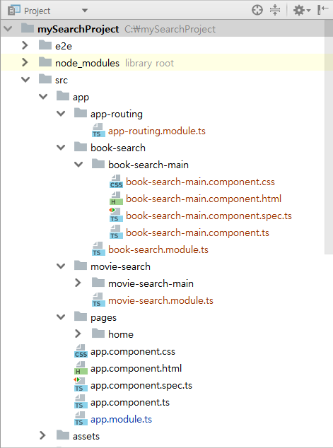
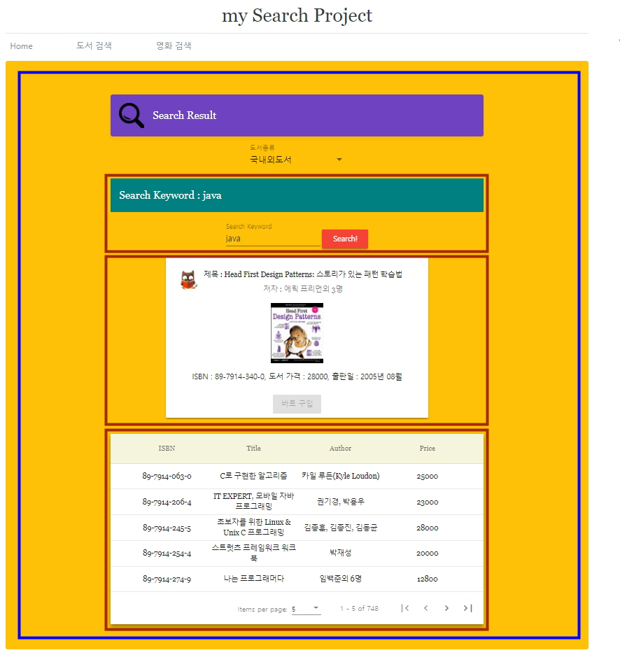
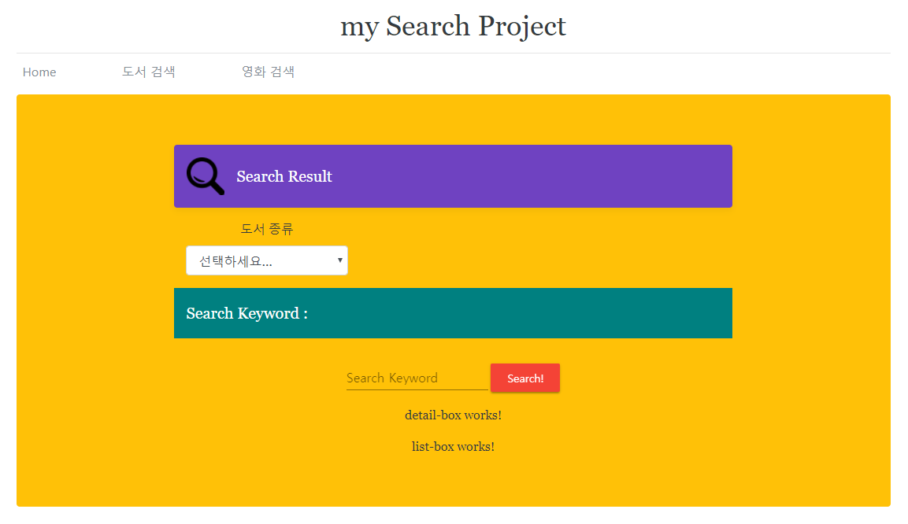
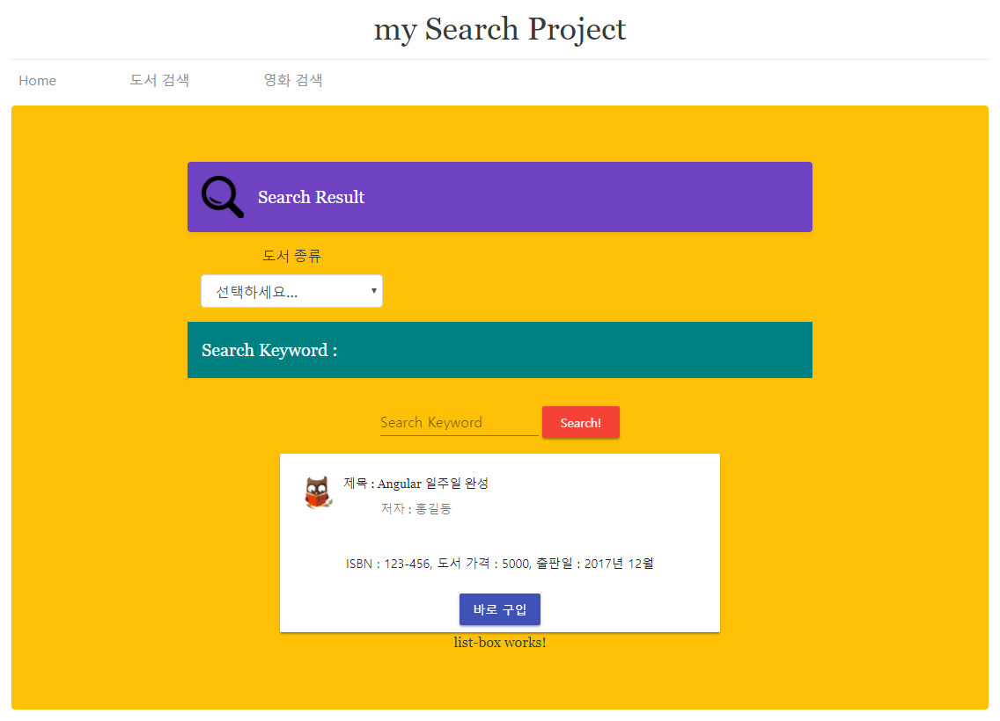

Angular 강좌(5) - 실습(1)
Angular 강좌는 여러 절로 구성되어 있습니다.
- Angular 강좌(1) - Introduction
- Angular 강좌(2) - 개발환경세팅
- Angular 강좌(3) - Component
- Angular 강좌(4) - Angular Material
- Angular 강좌(5) - 실습(1)
- Angular 강좌(6) - Data Binding
- Angular 강좌(7) - 실습(2)
- Angular 강좌(8) - Material Table
- Angular 강좌(9) - 데이터공유(@Input)
- Angular 강좌(10) - 데이터공유(@Output)
- Angular 강좌(11) - 데이터공유(@ViewChild)
- Angular 강좌(12) - 데이터공유(Content Projection)
- Angular 강좌(13) - Service
- Angular 강좌(14) - Service Mediator Pattern
- Angular 강좌(15) - Service RxJS
- Angular 강좌(16) - Material Table Event
- Angular 강좌(17) - 중간 정리
- Angular 강좌(18) - Directive
- Angular 강좌(19) - Pipe
- Angular 강좌(20) - Component Lifecycle
SPA( Single Page Application )
요즘 만들어지는 거의 대부분의 Front End Web Application은 SPA 형태입니다. Web Application이 하나의 Web Page로
구성되는 것이죠. 이와 대비되는 개념이 기존에 우리가 많이 했었던 JSP, ASP, PHP같은 것들입니다.
이 기술들은 모두 SSR(Server Side Rendering)기반의 Round Trip 방식의 Web Application을 개발하는데 사용됩니다.
기존의 Web Application은 Client가 새로운 Web Page를 요청할 때 마다 서버쪽에서 Web Page를 동적으로 만들어서
Client Browser에게 전송하는 방식을 취했습니다. 이 방식의 장,단점을 잠깐 살펴봐야 합니다. 장점은 서버쪽에서 모든 작업이
이루어지기 때문에 개발하기가 용이하다는 점입니다. 이미 개발방식도 정형화되어 있고 jQuery 정도만 익혀서 결과 Web
Page에 적용하는 식으로 Client쪽 처리도 쉽게 할 수 있습니다.
기존 Desktop 환경에서는 이 방식이 크게 문제가 되지 않았습니다. 하지만 Web Application의 사용환경이 Desktop환경에서 Mobile환경으로 넘어가면서 다음과 같은 문제가 발생하기 시작합니다.
-
클라이언트가 새로운 페이지를 요청하고 받을 때 마다 web browser 화면 전체가 결과 Page로
Refresh됩니다. 필요한 데이터만 받아서 필요한 부분만 갱신하면 되지 전체 페이지를 다 받아서 새로 고침하는 것은 네트워크 사용량을 생각해봐도 비효율적입니다. -
Mobile환경에서 Client는 이미 Native App을 사용하는 방식으로
UX가 확고하게 굳어져 있습니다. 따라서 우리의 Web Application도 마치 Native App처럼 동작하도록 만들어 제공해야 한다는 것이죠.
결국 위와 같은 문제를 해결하기 위해 나온 모던 웹 패러다임이 바로 SPA입니다. Network traffic의 감소 및 사용성 관점에서 상당히 가치있는 Front End 개발방식이라고 볼 수 있습니다. 하지만 SPA도 단점이 없는 것은 아닙니다. 일반적으로 두가지의 단점을 많이 이야기 합니다.
- 초기 로딩 속도 문제
- 검색엔진최적화(
SEO, Search Engine Optimization) 문제
실습인데 설명이 너무 길어지는군요. 이 문제는 여기서 따로 언급하지는 않겠습니다. 여하간 SEO 문제를 해결하기 위해
Angular Router를 이용하여 PathLocationStrategy라는 Location 정책을 이용해 우리의 Angular Application을
작성하겠습니다.
Module 생성
우리는 이미 AppModule이라고 불리는 Root Module을 가지고 있습니다.
여기에 추가적으로 다른 Module을 만들어서 개발할 수 있습니다.
먼저 Module에 대해 간단히 알아보고 우리 프로그램에 맞게 Module을 구성해 보도록 하겠습니다.
Angular의 Module은
연관성이 있는 Angular의 구성요소들을 하나의 단위로 묶은 것
을 지칭합니다. 또한 Angular Application은 크게 본다면 이런 Module의 집합이라고 할 수 있습니다. JavaScript에서 말하는 Module과는 다른 개념입니다.
아주 간단한 application인 경우 Root Module 하나로 구성할 수 있지만 일반적으로 여러개의 Module을 이용해서 구성하게 됩니다. 일반적으로 다음과 같은 형태의 Module을 이용합니다.
-
Feature Module특정 화면을 구성하는 구성요소를 묶어서 Module로 관리할 수 있습니다. 우리예제에서 Home은 단일 View로 구성되어 있습니다. 따로 Module을 만들어서 Home에 대한 구성요소를 관리해도 됩니다. 하지만 우리 예제에서는 Home에 대한 Component를 Root Module에서 관리하도록 하겠습니다.
하지만 도서 검색이나 영화 검색같은 경우 여러 요소들이 필요할 테고 각각을 Module로 따로 관리하는게 좋습니다. Application안에 여러 화면이 존재할 경우 각 화면별로 Module화를 시키지 않으면 추후에 구성요소의 관리가 어려워짐은 당연합니다.
또 Application 전역에서 사용하는 구성요소들을 따로 묶어서 Module로 만들 수도 있습니다. 이런 기능들은 Root Module에 import가 될 필요가 있는 것들로 간단한 예를 들자면 Authentification Module이나 Routing Module등이 있습니다. -
Shared ModuleFeature Module에 의해서 공통적으로 사용되는 구성요소들을 묶어서 Module로 관리할 수 있습니다. 주로 Feature Module에서 공통적으로 사용되는 Directive나 Pipe같은 것들이 포함됩니다.
먼저 Routing Module을 생성하고 그 안에서 Router를 구성하고 등록해보겠습니다.
그 후 Routing Module을 Root Module에서 가져다 사용하는 식으로 작성을 해 보죠.
command 창을 열고 다음의 명령을 이용하여 새로운 Module을 하나 생성합니다.
ng generate module app-routing
정상적으로 실행되면 src/app/app-routing 폴더가 생성되고 그 안에 app-routing.module.ts 파일이 생성됩니다.
조금뒤에 이 Module안에 Router를 작성하게 되겠죠. 우리가 가지고 있는 app.module.ts라는 Root Module에 Router를 생성, 등록
해도 됩니다. 하지만 실제 Application을 작성할 때는 사용되는 Routing이 많아지게 되는데 이때는 Routing Module로 빼서
관리하시는게 좋습니다.
각 Routing이 사용할 Component 생성
각 Routing 경로가 사용할 Component를 생성합니다. 그런데 위에서 특정 화면을 구성하는 구성요소를 Module화 시켜서 사용하는게 좋다고 했으니 우리의 2가지 화면에 대해 Module을 생성하고 이 안에 Component를 생성하도록 하겠습니다.
Home은 아까 언급했듯이 별다른 기능이 없는 View이기 때문에 따로 Module로 생성하지 않고 도서 검색에 대한 Module과 영화 검색에 대한 Module만 만들도록 하겠습니다.
Home 화면을 담당할 Component는 src/app/pages 하단에 생성하고 Root Module에서 직접 import해서 사용하도록 생성합니다.
command 창에서 Angular CLI를 이용해 Component를 생성합니다.
ng generate component pages/home
이제 도서 검색을 위한 Module을 생성하고 그 안에 Component를 생성합니다.
ng generate module bookSearch
ng generate component bookSearch/bookSearchMain
마지막으로 영화 검색을 위한 Module을 생성하고 그 안에 Component를 생성합니다.
ng generate module movieSearch
ng generate component movieSearch/movieSearchMain
정상적으로 수행되면 아래의 그럼처럼 각각의 폴더안에 파일들이 생성되게 됩니다.

Routing Module 수정
이제 Routing Module을 수정하여 Router를 구성합니다. app-routing.module.ts를 다음과 같이 수정합니다.
import { NgModule } from '@angular/core';
import { CommonModule } from '@angular/common';
// Angular Router Module import
import { Routes, RouterModule } from "@angular/router";
// Routing 처리를 할 각각의 Component import
import { HomeComponent } from "../pages/home/home.component";
import { BookSearchMainComponent } from
"../book-search/book-search-main/book-search-main.component";
import { MovieSearchMainComponent } from
"../movie-search/movie-search-main/movie-search-main.component";
// Router 생성( path 표시할 때 Root path에 대한 '/'는 제외 )
const routers: Routes = [
{ path : '', component : HomeComponent },
{ path : 'book', component : BookSearchMainComponent },
{ path : 'movie', component : MovieSearchMainComponent }
];
@NgModule({
imports: [
CommonModule,
RouterModule.forRoot(routers)
],
declarations: [],
exports: [RouterModule]
})
export class AppRoutingModule { }
Root Module 수정
Routing Module이 만들어졌으니 이제 Root Module에서 Routing Module을 불러들이는 코드를 작성해야 합니다.
app.module.ts 파일의 내용입니다.
import { BrowserModule } from '@angular/platform-browser';
import { NgModule } from '@angular/core';
// BrowserAnimationsModule import 구문 추가
import { BrowserAnimationsModule } from '@angular/platform-browser/animations';
// MatTableModule import 구문 추가
import { MatTableModule } from '@angular/material/table';
import { AppComponent } from './app.component';
import { HomeComponent } from './pages/home/home.component';
// Feature Module import
import { BookSearchModule } from "./book-search/book-search.module";
import { MovieSearchModule } from "./movie-search/movie-search.module";
// Routing Module import
import { AppRoutingModule } from "./app-routing/app-routing.module";
@NgModule({
declarations: [
AppComponent,
HomeComponent
],
imports: [
BrowserModule,
BrowserAnimationsModule,
MatTableModule,
AppRoutingModule,
BookSearchModule,
MovieSearchModule
],
providers: [],
bootstrap: [AppComponent]
})
export class AppModule { }
Navigation Menu 작성
이제 Navigation Menu를 만들어야 합니다. Routing Module을 이용해 Router의 구성과 등록이 완성되었으나
해당 Routing Path에 대한 View를 어디에 표시할지는 아직 지정하지 않았습니다.
app.component.html을 수정해 RouterOutlet directive를 이용해 View의 rendering위치를 지정해야 합니다.
여기서는 Bootstrap을 이용해서 화면을 구성했습니다. Bootstrap의 예제중에 Blog 예제가 있는데 그 형식을 가져다가 사용했습니다. Bootstrap을 사용하기 위해서는 다음과 같이 Bootstrap을 설치하여야 합니다.
npm install bootstrap@4.0.0-beta.2
버전에 약간 주의하셔야 합니다. 현재 최신 버전(bootstrap@4.0.0-beta.3)의 Bootstrap은 Angular CLI로 Production build를 했을 때 bundling 오류가 발생합니다.
설치가 완료되면 Bootstrap을 import하셔야 합니다. .angular-cli.json 파일을 다음과 같이 수정합니다.
"styles": [
"../node_modules/bootstrap/dist/css/bootstrap.min.css",
"styles.css"
],
이제 app.component.html 파일을 수정합니다.
<nav>
<a routerLink="/">Home</a>
<a routerLink="/book">도서검색</a>
<a routerLink="/movie">영화검색</a>
</nav>
<router-outlet></router-outlet>
쉽게 보기 위해 Bootstrap은 걷어내고 실제 필요한 부분만 명시했습니다. 주의해서 보셔야 할 건 routerLink 입니다.
<a>의 href 속성을 이용하면 서버에 request를 보내게되니 href를 이용하지 않습니다.
각각의 메뉴를 클릭했을 때 해당 URL을 Router에 전달하고 Router에 의해서 Component가 선택되서
<router-outlet></router-outlet>안에 Component가 지정한 HTML이 출력되게 됩니다.
결과가 잘 나오나요? Home 화면의 내용을 바꾸실려면 src/app/pages/home 폴더 안에 home.component.html을
적절히 수정하시면 됩니다.
참고로 다음과 같은 routerLinkActive directive를 이용하면 routerLink directive의 값과 현재 browser URL이 정확히
일치할 때 특정 style의 class를 지정할 수 있습니다.
<nav>
<a routerLink="/">Home</a>
<a routerLink="/book"
[routerLinkActiveOptions]="{ exact: true }"
routerLinkActive="menuActiveClass">>도서검색</a>
<a routerLink="/movie">영화검색</a>
</nav>
<router-outlet></router-outlet>
위의 예처럼 링크를 클릭해서 특정 경로로 Routing을 할 수도 있지만 버튼을 클릭했을 때 처럼
프로그램적으로 Routing을 변경해야 하는 경우도 있을 수 있습니다. 이런경우는 Angular Router의
navigate method를 이용하시면 됩니다.
import { Router } from '@angular/router';
...
...
constructor(private route:Router) { }
...
...
gotoBook() {
// Router객체에 대해 method호출
this.route.navigate(['book']);
}
현재까지 우리가 작성한 Angular Project에 대해 production build를 진행하실려면 다음과 같이 하시면 됩니다.
ng build --prod --base-href=/my-base-url/
도서 검색 화면
3개의 메뉴 중 Home 메뉴는 단일 페이지 이기 때문에 적절하게 수정해서 화면에 보여주면 됩니다. 먼저 최종적으로 만들어진 도서 검색 화면을 한번 보고 View을 어떻게 구성할지 개념적으로 확인하면 될 듯 싶습니다. 아래의 그림이 최종 만들어진 도서검색 화면입니다.

총 4개의 View로 구성되어 있습니다. 파란색으로 되어 있는 가장 큰 View안에 검색결과를 보여주는 영역과 도서 종류를 선택하는 Select Box가 들어 있습니다. 부모 View안에 빨간색으로 되어있는 3개의 자식 View가 포함되어 있네요. 맨 위의 View는 검색어를 입력할 수 있는 View이고 제일 아래의 View는 검색어에 해당하는 책에 대한 리스트를 표현하는 View입니다. 가운데 View는 리스트에서 특정 책을 선택하면 그 책의 내용을 자세하게 출력해주는 View입니다.
일단 화면을 만드는데 집중하고 실제 프로그램이 동작하는 로직에 관련된 부분은
나중에 service를 설명하면서 추가하도록 하겠습니다.
AppComponent 수정
이전에 만들어 놓은 mySearchProject를 수정하여 도서검색 화면을 만들고 그에 따른 Component들을 생성, 등록까지 진행하도록 하겠습니다.
src/app 폴더안에 app.component.ts 파일을 열면 다음과 같은 내용을 보실 수 있습니다.
import { Component } from '@angular/core';
@Component({
selector: 'app-root',
templateUrl: './app.component.html',
styleUrls: ['./app.component.css', './blog.css']
})
export class AppComponent {
title = 'app';
}
이 Component가 우리의 Root Component입니다.
selector: 'app-root' 설정에 의해 이 Component는 template 코드내에서
<app-root></app-root>로 되어 있는 부분을 rendering 한다는 것을 알 수 있습니다.
또한 templateUrl에 의해 app.component.html을 이용해 rendering한다는 것도
파악할 수 있겠네요.
index.html을 보시면 다음과 같이 <app-root></app-root>로 되어있는 부분이 보이고 이 부분이 우리 Component에 의해서
rendering되게 됩니다.
<!doctype html>
<html lang="en">
<head>
<meta charset="utf-8">
<title>MySearchProject</title>
<base href="/">
<meta name="viewport" content="width=device-width, initial-scale=1">
<link rel="icon" type="image/x-icon" href="favicon.ico">
<!-- Material Icon 설정. -->
<link href="https://fonts.googleapis.com/icon?family=Material+Icons" rel="stylesheet">
</head>
<body>
<app-root></app-root>
</body>
</html>
결국 index.html안의 <app-root></app-root> 부분은 app.component.html의 내용으로 rendering된다는
것을 파악할 수 있습니다.
이제 app.component.html의 코드를 보죠. 위에서 Routing Module을 이용했기 때문에 다음과 같은 코드가 나옵니다.
Bootstrap 코드도 포함시켰습니다.
<div class="container">
<header class="blog-header py-3">
<div class="row flex-nowrap justify-content-between align-items-center">
<div class="col-4 pt-1">
</div>
<div class="col-4 text-center">
<a class="blog-header-logo text-dark" href="#">my Search Project</a>
</div>
<div class="col-4 d-flex justify-content-end align-items-center">
</div>
</div>
</header>
<div class="nav-scroller py-1 mb-2">
<nav class="nav d-flex justify-content-between">
<a class="p-2 text-muted" routerLink="/">Home</a>
<a class="p-2 text-muted" routerLink="/book">도서 검색</a>
<a class="p-2 text-muted" routerLink="/movie">영화 검색</a>
<a class="p-2 text-muted" href="#"></a>
<a class="p-2 text-muted" href="#"></a>
<a class="p-2 text-muted" href="#"></a>
<a class="p-2 text-muted" href="#"></a>
<a class="p-2 text-muted" href="#"></a>
<a class="p-2 text-muted" href="#"></a>
<a class="p-2 text-muted" href="#"></a>
<a class="p-2 text-muted" href="#"></a>
<a class="p-2 text-muted" href="#"></a>
</nav>
</div>
<div class="jumbotron p-3 p-md-5 text-dark rounded bg-warning">
<div class="col-md-12 px-0">
<router-outlet></router-outlet>
</div>
</div>
</div>
Bootstrap을 이용했기 때문에 Style에 관련된 코드가 많네요. 여하간 Navigation Menu를 작성하고 각 Menu를
클릭하면 Router에게 routerLink에 명시된 경로를 전달하게 됩니다. 그러면 Router는 해당 경로에 매핑되는 Component를
찾게되고 해당 Component는 <router-outlet></router-outlet>위치에 View를 Rendering 하게 됩니다.
결과적으로 도서 검색 메뉴를 클릭하면 <router-outlet></router-outlet> 부분에 book-search-main.component.html의
내용이 rendering되게 되고 이제 그 내용을 수정해서 화면을 다시 구성합니다.
View를 추가하기 위해 Component를 생성하는 작업을 진행해야 합니다.
Component 추가
book-search-main.component.html은 내부에 3개의 View 영역을 포함하고 있습니다.
- 첫번째 영역 : 검색 키워드를 입력하고 검색 버튼을 눌러 실행시키는 View 영역.
- 두번째 영역 : 검색된 책을 선택하면 책의 세부정보가 출력되는 View 영역.
- 세번째 영역 : 검색된 책들의 리스트를 출력하기 위한 View 영역.
이렇게 3개의 View를 이용해서 화면을 구성할 것이고 3개의 Component를 추가하여 화면을 구성하려 합니다.
Angular CLI를 이용하여 다음과 같이 실행해서 새로운 Component를 추가합니다.
ng generate component bookSearch/search-box
Angular CLI의 generate를 이용하여 Component 생성 시 Component를 구성하는 관련 파일들을 자동으로 손쉽게 생성할 수 있습니다.
generate를 다 쓰지 않고 앞글자인 g 만 써도 됩니다. generate는 뒤에 어떤 요소를 생성할 것인지 그리고 요소명은
무엇인지를 받아 특정 요소를 생성하게 됩니다. 즉, Component만 생성할 수 있는건 아닙니다.
생성된 src/app/book-search/search-box 폴더 안에 있는 search-box.component.ts 파일을 열어서 selector를 확인해보니
app-search-box로 지정되어 있습니다. 우리가 template 코드에서 <app-search-box></app-search-box>을 이용하면
이 Component가 해당 영역을 rendering하게 되겠네요.
이와 유사하게 2개의 Component를 더 생성합니다. 다음과 같이 실행해서 새로운 Component를 추가합니다.
ng generate component bookSearch/detail-box
ng generate component bookSearch/list-box
자 이제 생성된 각각의 Component에 대한 selector를 참조해 src/app/book-search/book-search-main 안의
book-search-main.component.html의 내용을 다음과 같이 수정합니다.
<div class="bookSearch-outer">
<div class="d-flex align-items-center p-3 my-3 text-white-50 bg-purple rounded box-shadow">
<img class="mr-3" src="assets/images/search-icon.png" alt="" width="48" height="48">
<div class="lh-100">
<h5 class="mb-0 text-white lh-100">Search Result</h5>
</div>
</div>
<div class="form-group col-md-4">
<label for="inputState">도서 종류</label>
<select id="inputState" class="form-control">
<option selected>선택하세요...</option>
<option>국내외도서</option>
<option>국내도서</option>
<option>국외도서</option>
</select>
</div>
<div>
<app-search-box></app-search-box>
</div>
<div>
<app-detail-box></app-detail-box>
</div>
<div>
<app-list-box></app-list-box>
</div>
</div>
또한 src/app/book-search/book-search-main 안의
book-search-main.component.css의 내용을 다음과 같이 작성합니다. CSS에 대한 설명은 생략합니다.
.bookSearch-outer {
font-family: Georgia !important;
width: 70%;
text-align: center;
margin: 0 auto;
}
각 Component의 View 작성
이제 각각의 Component의 templateUrl에 명시된 html을 Angular Material을 이용해 우리가
사용할 화면을 만들어 냅니다.
제일 먼저 상단의 search-box 영역에 대한 HTML을 작성합니다.
다음과 같이 src/app/book-search/search-box 폴더안의 search-box.component.html의 내용을 수정합니다.
<div class="example-container">
<mat-toolbar class="search-toolbar-style">Search Keyword : </mat-toolbar>
<mat-form-field>
<input matInput placeholder="Search Keyword">
</mat-form-field>
<button mat-raised-button color="warn">Search!</button>
</div>
search-box.component.css의 내용은 다음과 같이 수정합니다.
.search-toolbar-style {
font-family: Georgia;
color: white;
background-color: teal;
margin-bottom: 20px;
}
Angular Material을 이용했기 때문에 해당 Element에 대한 Material Module을 book-search.module.ts안에
import해 줍니다.
다음은 book-search.module.ts 파일의 내용입니다.
import { NgModule } from '@angular/core';
import { CommonModule } from '@angular/common';
import { BookSearchMainComponent } from './book-search-main/book-search-main.component';
import { SearchBoxComponent } from './search-box/search-box.component';
import { ListBoxComponent } from './list-box/list-box.component';
import { DetailBoxComponent } from './detail-box/detail-box.component';
import { MatFormFieldModule } from '@angular/material/form-field';
import { MatInputModule } from '@angular/material';
import { MatButtonModule } from '@angular/material/button';
import { MatToolbarModule } from '@angular/material/toolbar';
@NgModule({
imports: [
CommonModule,
MatFormFieldModule,
MatInputModule,
MatButtonModule,
MatToolbarModule
],
declarations: [BookSearchMainComponent,
SearchBoxComponent,
ListBoxComponent,
DetailBoxComponent]
})
export class BookSearchModule { }
일단 여기까지 작성하고 실행을 시켜보면 다음과 같은 화면을 볼 수 있습니다.

화면이 잘 나오나요? 아직 데이터 바인딩과 이벤트에 대한 내용은 설명하지 않았기 때문에 키워드를 입력하거나 버튼을 눌러도 아무런 반응을 하지 않습니다.
이와 비슷하게 가운데 detail-box의 View는 다음과 같이 작성하시면 됩니다. list-box는 데이터 바인딩에 대한 내용을 배워야지 사용할 수 있으니 list-box의 View는 데이터 바인딩에 대해 설명하고 작성하겠습니다.
아래는 detail-box Component에 대한 각각의 코드입니다.
detail-box.component.css 파일입니다. src/assets/images 폴더안에 book-icon.jpg 파일을 하나 넣어두셔야 합니다.
.example-card {
width: 500px;
margin: 0 auto;
}
.example-header-image {
background-image: url('/assets/images/book-icon.jpg');
background-size: cover;
}
.book-image {
width: 100px !important;
}
.detail-header-style {
font-family: Georgia;
}
detail-box.component.html 파일입니다.
<mat-card class="example-card">
<mat-card-header class="detail-header-style">
<div mat-card-avatar class="example-header-image"></div>
<mat-card-title>제목 : Angular 일주일 완성</mat-card-title>
<mat-card-subtitle>저자 : 홍길동</mat-card-subtitle>
</mat-card-header>
<img mat-card-image class="book-image" src="">
<mat-card-content>
<p>
ISBN : 123-456, 도서 가격 : 5000, 출판일 : 2017년 12월
</p>
</mat-card-content>
<mat-card-actions>
<button mat-button mat-raised-button color="primary">바로 구입</button>
</mat-card-actions>
</mat-card>
Material Card Layout Component를 사용했기 때문에 해당 Module에 대한 처리를 book-search.module.ts에 해주어야 하겠죠?
import { NgModule } from '@angular/core';
import { CommonModule } from '@angular/common';
import { BookSearchMainComponent } from './book-search-main/book-search-main.component';
import { SearchBoxComponent } from './search-box/search-box.component';
import { ListBoxComponent } from './list-box/list-box.component';
import { DetailBoxComponent } from './detail-box/detail-box.component';
import { MatFormFieldModule } from '@angular/material/form-field';
import { MatInputModule } from '@angular/material';
import { MatButtonModule } from '@angular/material/button';
import { MatToolbarModule } from '@angular/material/toolbar';
import { MatCardModule } from '@angular/material/card';
@NgModule({
imports: [
CommonModule,
MatFormFieldModule,
MatInputModule,
MatButtonModule,
MatToolbarModule,
MatCardModule
],
declarations: [BookSearchMainComponent,
SearchBoxComponent,
ListBoxComponent,
DetailBoxComponent]
})
export class BookSearchModule { }
결과 화면
지금까지 작성한 내용을 실행시켜보면 다음과 같은 화면을 보실 수 있습니다.

이번 포스트에서는 Component를 추가하고 Angular Material을 이용해 View를 작성해보았습니다. 다음 포스트에서는 데이터 바인딩에 대한 내용을 알아보도록 하겠습니다.
End.
Angular 강좌는 아래의 책과 사이트를 참조했습니다. 조금 더 자세한 사항을 알고 싶으시면 해당 사이트를 방문하세요!!
- Angular Official HomePage
- Angular Material Official HomePage
- Build a Mobile App with Angular 2 and Ionic 2
- Angular 첫걸음 - 한빛미디어
- 제대로 배우는 Angular 4 - 비제이퍼블릭